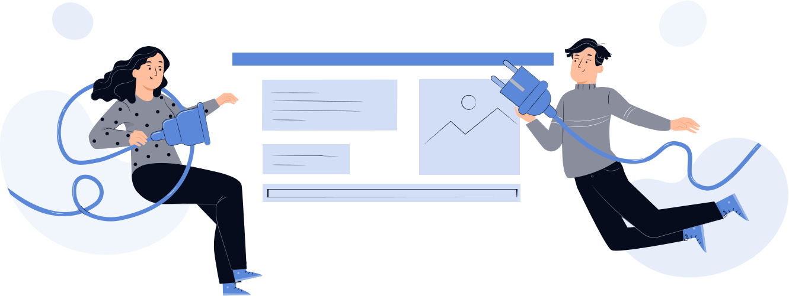

//= template/header.html
<!-- START CONTENT  -->

//= template/head.html

<div class="page-404">
    <h2>Упс, что-то пошло не так</h2>
    <div>Вернитесь на главную</div>
    
    <a href="javascript:void(0)" class="btn btn-big">Вернуться на главную</a>
</div>

<!-- END CONTENT  -->
//= template/footer.html